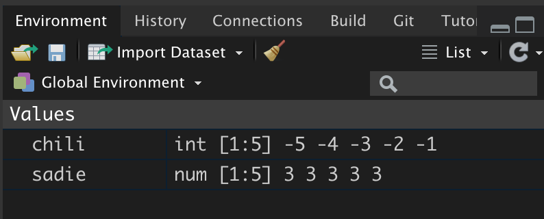

2 Getting Started with R
In this chapter, you will be get started writing and working with R syntax. The ideas introduced will be useful as you interact with statistical computation, whether it be to carry out data analysis, or to write your own R program or package. To begin,
- Open a new session in RStudio.
A “session” is the terminology we use to describe the duration from opening RStudio to closing RStudio. You can begin a new R session by either opening the RStudio application on your computer, or, if you are already in an existing R session, by selecting Session > New Session from the RStudio menu.
2.1 Computing in the Console
There are a several ways to interact with R within RStudio. One of those methods is to issue commands in the RStudio console pane. Computing in the console is similar to working with a calculator: you enter syntax and R runs the syntax. The > symbol in the console pane is called the “R prompt” and is prompting you to enter syntax. After you enter any syntax, you hit the
To get started, we will have R carry out some arithmetic. At the prompt enter each of the following lines of syntax. After each line, hit the <return> or <enter> key.
# Addition
2 + 3
# Subtraction
6 - 10
# Multiplication
4 * 5
# Division
23 / 2
# Exponents
10 ^ 3Executing each line of syntax returns the results of the computation in the console pane. The result, in R parlance, is referred to as a “returned value”. After executing the computation, the R prompt reappears and you can issue a new line of syntax.
Continuation Prompt: At some point in your computational career, you will likely encounter the continuation prompt. Symbolized by +, this prompt appears instead of the R prompt to indicate that you did not complete the syntax you entered prior to hitting the <enter> key after inputting the slash; before inputting the 2. You would see the continuation prompt:
> 23 /
+ The continuation prompt tells you that the syntax you started to enter is still active. If you now enter 2 and hit the <enter> key, the syntax will be executed as if you had not inadvertently hit <enter> in the middle of the computation. If you are in the middle of a more complex piece of syntax, you could also hit the <esc> key until the R prompt is re-shown. Then you can start the computation over.
Space in Syntax: For the computation in R, space is irrelevant. For example, each of the following syntactical statements is equivalent:
4 * 5
4*5
4 * 5That being said, well-written code includes space! Space in code makes it easier to read and debug, in the same way that including space in written prose helps us read and parse words, sentences, and paragraphs.
2.2 Functions: The Workhorse of R
Almost all commands in R are built around the use of a function. Functions carry out operations on their inputs (called arguments) and produce an output (called a returned value).
The syntax for using most functions in R follows a simple structure: The name of the function is followed by a pair of parentheses. Argument values (inputs) are specified inside the parentheses. In general,
function_name(argument)Below are several example of this structure for some common mathematical functions.
#Square root
sqrt(100)[1] 10#Absolute value
abs(-23)[1] 23#Factorial
factorial(5)[1] 120Functions can take multiple arguments (inputs). If there is more than one argument, the arguments are always separated by a comma.
function_name(argument_1, argument_2, ...)For example, the seq() function creates a sequence of values that have a particular start and end value.
seq(1, 5)[1] 1 2 3 4 5Note that the order of the arguments matters! Reversing the order of the arguments inputted to the seq() function returns different output.
seq(5, 1)[1] 5 4 3 2 1Each of the arguments actually has a name, and if those names are used to assign the values we are inputting to the function, then the order of the arguments is irrelevant.
# Named arguments
seq(from = 1, to = 5)[1] 1 2 3 4 5# Order no longer matters
seq(to = 5, from = 1)[1] 1 2 3 4 5It is a good habit to use named arguments when you are writing your syntax. It makes the code more readable and easier to adapt if you come back to it later. Sometimes when the initial argument of a function is well-established, that first argument is left unnamed, but all other arguments used are named. A good example of this is the use of the lm() function in which the initial formula= argument is typically unnamed, but other arguments (e.g., data=) are named.
2.3 Connecting Computations
One powerful aspect of computing is that the output from a function can be used as input into another function. This is akin to calculations you may have encountered in mathematics course like algebra. For example,
\[ \sqrt{\log(100)} \]
In carrying out this calculation, you would first compute the logarithm of 100 and then take the square root of that result. Using function notation, your algebra teacher might have written
\[ g(~f(x)~) \]
where \(f(x)\) is the logarithm function and \(g(x)\) is the square root function. Regardless of how we express this,the idea is that the output of the logarithm function is used as input to the square root function. Using R, there are two primary ways to connect computations in this manner: chaining and assignment.
2.3.1 Chaining
Chaining is a direct reflection of the functional notation \(g(~f(x)~)\) in that you embed one computation directly in another. For example, to find the absolute value of all the integers between \(-5\) and \(-1\), we can chain the abs() function and the seq() functions:
abs( seq(from = -5, to = -1) )[1] 5 4 3 2 1Note here that the output/returned value is not a single value, but five values. The absolute value function was applied to each of the values in the sequence. Compare this to the result from the following chained computations:
mean( seq(from = -5, to = -1) )[1] -3Here the mean function applied to the sequence of values returns a single value as output. When a function is applied to a set of multiple values (i.e., a vector), some functions will apply their computations separately on each element/value (element-wise computation returns multiple values), while others will apply the computation to the set of elements as a whole (vector-wise computation returns a single value). Most of the time it will be clear from the function name or description whether the output returns a single value or multiple values.
We can chain as many computations together as we would like. For example here we find the square root of the absolute value of all the integers between \(-5\) and \(-1\).
sqrt( abs( seq(from = -5, to = -1) ) )[1] 2.236068 2.000000 1.732051 1.414214 1.0000002.3.2 Assignment
We can also connect computations through assignment. With assignment, we store the output of a computation by assigning it to a named object. We can then use that named object in another computation. For example, here we first store the integers between \(-5\) and \(-1\) in an object called chili. Then we find the absolute value of each value by using chili as the argument in the abs() function.
# Assign the sequence to the object chili
chili = seq(from = -5, to = -1)
# Compute the absolute values
abs(chili)[1] 5 4 3 2 1To view the contents of an object, just print the name of the object. Below, after creating the object sadie, we view its contents.
# Assign values to sadie
sadie = rep(3, times = 5)
# View contents of sadie
sadie[1] 3 3 3 3 3Pretty much any name can be used when you create an object, with some caveats: object names cannot begin with a digit nor include hyphens or spaces. Although they are legal object names, chili and sadie are not particularly good object names. Better object names would describe the contents of the object.
In my own workflow, I tend to use all lowercase letters in my object names and I use underscores for word breaks. For example,
ses,gpa,occupationact_math,mothers_educ
2.3.3 Objects in the R Working Environment
We can continue to use the objects you created (e.g., chili and sadie) in our computations, so long as the objects remain in our R working environment.
# Sum the pairwise elements of the two objects
chili + sadie[1] -2 -1 0 1 2# Sum all the elements in chili
sum(chili)[1] -15# Product of all the elements in sadie
prod(sadie)[1] 243In RStudio you can see which objects are in your working environment by examining the Environment pane.

Not only does this pane indicate the name of the objects in the working environment, but is also displays each object’s class. In this case we can tell that chili is an integer vector and sadie is a numeric vector.1 Moreover, we are told that each vector includes five elements, shown in the environment pane as [1:5]. Lastly, we are given a preview of each object’s contents. Since these vectors only contain five elements, we see all the values in the preview.
You can also use syntax to obtain a list of objects that are in your working environment using the ls() function with no arguments.
# List the objects in working environment
ls()[1] "chili" "has_annotations" "sadie" When an object name is re-used, the previous value of the object is lost.
# Assign the values 1 to 10 in chili
chili = seq(from = 1, to = 10)After assigning new values to chili, we can see the information in the environment pane has been updated to reflect the new contents of the object.

chili although still an integer vector, now includes 10 elements.Any computations carried out with chili will use the new object.
# Sum all the elements in chili
sum(chili)[1] 55If you want the previous version of chili you need to re-create the object. If you close your R session all of the objects you created will be lost.
2.4 Script Files: Recording Your Syntax
It is important to be able to record the syntax you use. This acts as a way of “saving” your work, and it also acts as a record of the analysis for your collaborators in the spirit of reproducible work. One way to record the R syntax you use is to employ a script file. You can create a new script file by selecting File > New File > R Script from the RStudio menu bar. You can also obtain a new R script by clicking the New File icon (document with the plus-sign) on the tool bar and selecting R Script.

File menu. RIGHT: Create a new script file by clicking on the New File icon in the toolbar.Script files should only include your R syntax and comments. Script files should NOT include:
- prompts (>)
- output
Comments, which are human-readable annotations or explanations of the syntax, are written using the hashtag (#). These can be placed on their own line in the script file, or can be placed at the end of a line with syntax. The comment continues until you hit the

Script files can be saved and opened the same as any other document. So, no more worrying about losing your work or objects that you created when you close your R sesssion. Just open your saved script file, highlight the parts you want to re-run, and click the Run button!
2.4.1 Executing Syntax from a Script File
Not only does the script file record your syntax, but it can also act as the vehicle from which you run your R syntax. Syntax in the script file can be executed by highlighting it and pressing the Run button in the toolbar. You can run one line at a time, or highlight multiple lines and execute all of them sequentially.
Run button in the toolbar.Writing syntax directly in the script file and running it is a groovy workflow for using R. Writing syntax directly in the script file also saves you from having to copy-and-paste syntax you want to save from the console. In my own work, I use this workflow almost daily.
2.5 Installing and Loading R Packages
Every R function is housed in a package. To use the functions in a particular package, the package needs to be (1) installed, and (2) loaded into memory.

You can see the packages (and which version of each package) are installed by examining the Packages tab in RStudio. Every package listed there has been installed. You will also be able to see the version number of the package that is installed. Some of those packages may be checked. These are the packages that are also loaded into memory.

Twenty-nine packages were included when you installed R on your computer. When you start an R session by opening RStudio, some of those packages are also loaded into memory.

2.5.1 Loading Packages into Memory
To load a package that is installed, you use the library() function and include the name of the package you want to load in as the sole argument. For example, to load the {splines} package, use the following syntax:
# Load splines package
library(splines)Some packages requires other packages (dependencies) to work. For example, the {lme4} package is dependent on the {Matrix} package. When you load packages that have dependencies, R will also load the dependencies (assuming you have them installed). When it does this, a message will be printed after you execute library(). For example, here is what happens when we load the {lme4} package.
library(lme4)Loading required package: MatrixOnce the package is loaded, all of the functions, data sets, etc. in that package are available to you. Packages will need to be loaded every time you launch a new R session.
2.5.1.1 Masked Objects
Sometimes you will get a message about objects being masked. This is not a problem. It is just informative and means that the package you just loaded has a function that has the exact same name as a previously loaded package. If you use that particular function, the most recently loaded package’s version of the function will be used. For example, after loading the {dplyr} library the following message is printed:
Attaching package: ‘dplyr’
The following objects are masked from ‘package:stats’:
filter, lag
The following objects are masked from ‘package:base’:
intersect, setdiff, setequal, unionThis tells me that the {dplyr} package includes six functions that have the same name as functions included in other packages that have already been loaded into memory (two from the {stats} package and four from the {base} package.) Since {dplyr} was the most recently loaded package, if you were to use the filter() function, R would use {dplyr}’s filter() function rather than that from the {stats} package2.
2.5.1.2 Error Loading a Package
Once in a while, when loading a package, you may get an error. Don’t panic. There are two errors that are common. The first error you may get indicates that the package did not get installed. For example, if the {ggplot2} package was not installed, trying to use the library() function to load that package would result in an error.
library(ggplot2)Error in library(ggplot2) : there is no package called ‘ggplot2’Simply install the package and then re-try loading it.
The second error that you might run across when trying to load a package occurs when the installation did not include the package dependencies. For example,
library(odbc)Error: package or namespace load failed for ‘odbc’ in loadNamespace(j <- i[[1L]], c(lib.loc, .libPaths()), versionCheck = vI[[j]]):
there is no package called ‘Rcpp’Again, don’t panic! Here the error message is saying that the {Rcpp} package is a dependency and it is not installed. To fix this, install the {Rcpp} package and then try again. (You may need to open a new R session first.) You may need to install more than one dependency, so just keep installing what is missing until it works.
2.5.2 Adding Functionality: Installing Packages
You can also install other packages onto your R system. R, in fact, has a repository called CRAN3, that includes 16,000 different packages (as of July 2020). The easiest way to install a package from CRAN onto your computer is to use the Install button in the `Packages tab of RStudio.
This will open a pop-up window where you can type the CRAN package you want to install in a text box. Ensure that the “Install dependencies” box is checked (this will also install any package dependencies), and then click “Install”.

You may be prompted to choose a nearest mirror. If so, choose a mirror location. If you are successful in installing the package, you will get a message like the following:
Installing package into ‘/Users/zief0002/Library/R/4.0/library’
(as ‘lib’ is unspecified)
trying URL 'https://cran.rstudio.com/bin/macosx/contrib/4.0/dplyr_1.0.0.tgz'
Content type 'application/x-gzip' length 1209135 bytes (1.2 MB)
==================================================
downloaded 1.2 MB
The downloaded binary packages are in
/var/folders/s3/sqlc9xw92w54166w86dgkd000000gr/T//Rtmps80Uf8/downloaded_packagesThe message you get on Windows may be slightly different, but the key is that there is not an error. Furthermore, you should immediately be able to load the package using the library() function.
An equivalent manner of installing a package via syntax is to use the install.packages() function. For example, to install the {dplyr} package we could have used the following syntax:
install.packages("dplyr", dependencies = TRUE)Note that the name of the package is included in quotation marks (it is a character string). The argument dependencies=TRUE installs all package dependencies, similar to checking the “Install dependencies” box in the pop-up menu.
2.5.2.1 Installing Packages from GitHub
CRAN is not the only place to get R packages. Many developers add packages to a website called GitHub. Packages hosted on GitHub can be installed using the install_github() function from the {remotes} package.
First, you will need to install the {remotes} package from CRAN and then load it using the library() function. Then, you can use the install_github() function to actually install the package. This function is provided a character string that specifies the user name and GitHub repository for the package, separated by a slash. You can find this in the part of the URL that follows “https://github.com/” in your web browser. For example, the URL for the {educate} package is: “https://github.com/zief0002/educate”, so to install this we would use:
# Load remotes package
library(remotes)
# Install dplyr from GitHub
install_github("zief0002/educate")The message I get when installing this is
Installing package into ‘/Users/zief0002/Library/R/4.0/library’
(as ‘lib’ is unspecified)
* installing *source* package ‘educate’ ...
** using staged installation
** R
** inst
** byte-compile and prepare package for lazy loading
** help
*** installing help indices
*** copying figures
** building package indices
** installing vignettes
** testing if installed package can be loaded from temporary location
** testing if installed package can be loaded from final location
** testing if installed package keeps a record of temporary installation path
* DONE (educate)The “DONE” message typically signified successful installation. Note that you may be prompted to update some packages. If you get this message, choose the option to update “ALL” packages. As with packages installed from CRAN, if things worked you should be able to load the package you just installed using the library() function without any errors.
2.5.3 Install Rtools/Command Line Tools
You may need to install some additional functionality to your system in order to get certain packages to install or load properly. On a Windows machine, you might need to install Rtools. Mac users might need to add the Command Line Tools. These tools also allow you to write and compile your own R packages. RStudio has well written instructions for adding these tools at: https://support.rstudio.com/hc/en-us/articles/200486498-Package-Development-Prerequisites.
The difference between the two classes is technical and related to how R internally stores the information in the vector.↩︎
If you really wanted to use the
filter()function from the{stats}package you could specify this in the syntax using the::operator,stats::filter(). This operator also allows you to use a function without loading the package with thelibrary()function.↩︎“CRAN is a network of ftp and web servers around the world that store identical, up-to-date, versions of code and documentation for R.”↩︎